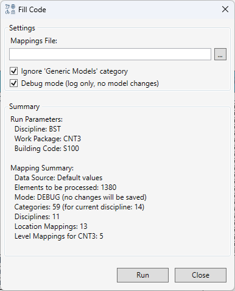
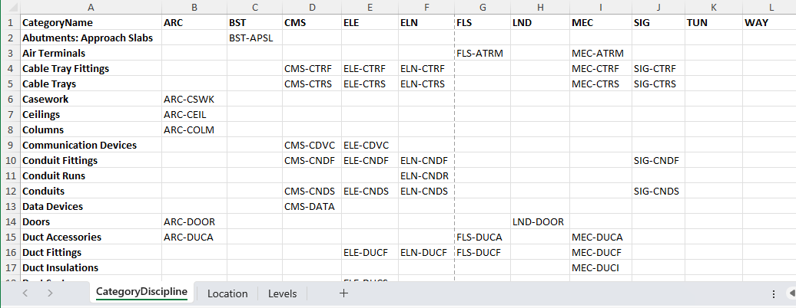

Comando FillCode
Tabla de contenidos
Propósito
 El comando FillCode está diseñado para generar y asignar automáticamente un código de identificación único a los elementos en un modelo de Revit. El código se crea en base a un conjunto de reglas que se pueden configurar mediante un archivo de Excel externo y se escribe en el parámetro
El comando FillCode está diseñado para generar y asignar automáticamente un código de identificación único a los elementos en un modelo de Revit. El código se crea en base a un conjunto de reglas que se pueden configurar mediante un archivo de Excel externo y se escribe en el parámetro IDD_PDS_CODE del elemento.
Esto permite estandarizar la identificación de elementos de acuerdo con los requisitos del proyecto.
Cómo usar
Al ejecutar el comando, se abre una ventana de configuración que le permite controlar el proceso de generación de códigos.

1. Configuración de Mapeos (Mappings)
El comportamiento del comando está completamente determinado por las reglas de mapeo. Tienes dos opciones:
- Usar valores por defecto: Si el campo “Ruta al archivo de Excel” está vacío, el comando utilizará un conjunto de reglas internas y predefinidas.
- Usar un archivo de Excel externo: Puede especificar la ruta a un archivo de Excel con sus propias reglas. Esto proporciona la máxima flexibilidad.
Gestión del archivo de mapeo:
- Campo “Ruta al archivo de Excel”: Introduzca la ruta a su archivo
.xlsxaquí. La ruta se guarda entre sesiones de Revit. - Botón “Examinar…”: Abre un cuadro de diálogo para seleccionar el archivo.
- Botón “Exportar configuración por defecto”: Crea un archivo de Excel de plantilla con las reglas estándar. Puede usarlo como punto de partida para sus propios mapeos.
- Botón “Recargar”: Le permite actualizar manualmente la información del resumen después de realizar cambios en el archivo de Excel.
2. Filtros y Opciones
- “Ignorar la categoría ‘Modelos genéricos’”: Habilitado por defecto. Excluye los elementos de esta categoría del procesamiento, ya que a menudo son auxiliares.
- “Modo de depuración (Debug mode)”: Si esta casilla está marcada, el comando ejecutará toda la lógica, analizará los elementos y generará un informe detallado, pero no realizará ningún cambio en el modelo. Esta es una forma segura de verificar la corrección de la configuración antes de aplicar realmente los códigos.
3. Panel de Resumen (Summary)
Este campo de texto de solo lectura muestra información resumida sobre cómo funcionará el comando con la configuración actual.
- Fuente de datos: Muestra si se están utilizando los “Valores por defecto” o el archivo de Excel especificado.
- Parámetros de ejecución: Muestra los identificadores clave extraídos del nombre del archivo de Revit actual (Paquete de trabajo, Código de edificio), que se utilizan para encontrar las reglas correctas.
- Resumen de mapeos: Muestra cuántas reglas se han cargado (número de categorías, disciplinas, códigos de ubicación, niveles para el paquete de trabajo actual).
- Cantidad de elementos: Muestra cuántos elementos en la vista actual o selección serán procesados.
4. Ejecución y Reporte
Después de hacer clic en el botón “Aceptar”, el comando procesa los elementos y muestra un mensaje final con el número de operaciones exitosas, advertencias y errores.
Se le pedirá que abra un informe de texto detallado, que contiene:
- Resumen (Summary): Información completa sobre los parámetros de ejecución y las reglas cargadas.
- Elementos con problemas: Una lista de elementos que no se pudieron procesar, con el motivo (p. ej., “código de sububicación no encontrado”, “nivel no determinado”).
- Elementos procesados con éxito: Una tabla de todos los elementos para los que el código se generó con éxito. Los datos se presentan en un formato listo para copiar en Excel y están ordenados por categoría.
Estructura del Código Generado
El código final tiene el siguiente formato:
DisciplineCode-CategoryCode-LocationCode-SubLocationCode-LevelCode
- DisciplineCode: El código de la disciplina (p. ej., “H” para HVAC, “E” para Eléctrico), determinado por la categoría del elemento.
- CategoryCode: El código de la categoría del elemento (p. ej., “DCT” para conductos).
- LocationCode: El código de la ubicación, determinado por el código de edificio del nombre del archivo.
- SubLocationCode: El código de la sububicación, leído del parámetro de instancia
IDD_SUBLOCATION. Si el parámetro está vacío, se usa?. - LevelCode: El código del nivel, determinado en función de la coordenada Z del elemento y el “Paquete de trabajo” del nombre del archivo.
Estructura del Archivo de Excel
El archivo de mapeo puede contener varias hojas para configurar diferentes reglas:
- CategoryDiscipline: Una matriz para mapear categorías de Revit a códigos de disciplina (
DisciplineCode) и códigos de categoría (CategoryCode). - Location: Una tabla para mapear “códigos de edificio” (del nombre del archivo) a
LocationCode. - Levels_WP…: Conjuntos de hojas (p. ej.,
Levels_WP2,Levels_WP3) para mapear coordenadas Z a códigos de nivel (LevelCode) para cada “Paquete de trabajo”.
